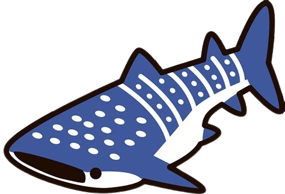

Lison Blondeau-Patissier

I enjoy teaching and more generally talking about computer science and
mathematics, both with bachelor/master students during
lectures/tutorials/practical sessions,
and with highschool students in more informal contexts.
Teaching fellowship at the ENS de Lyon (2024-2026)
- Semantics and Verification
Tutorial sessions, 1rst year master, ENSL.
Labelled transition systems, linear-time properties
(via order theory and topology), linear temporal logic,
ω-regular properties, Büchi automata, bisimulations,
Hennessy-Milner logic, logical equivalences, etc.
- Foundations of Computer Science Theory
Tutorial sessions, 3rd year bachelor, ENSL.
Finite automata, regular and algebraic languages, Turing machines,
computability, (primitive) recursive functions, complexity theory,
λ-calculus, etc.
- Logic
Tutorial sessions, 3rd year bachelor, ENSL.
Propositional logic, natural deduction, semantics, modelling theory,
incompleteness, set theory, etc.
- Probability Theory
Tutorial sessions, 3rd year bachelor, ENSL.
Discrete probabilities, expected value, moments, Markov, Chebyshev
and Chernoff inequalities, continuous probabilities, probabilistic method,
convergence of random variables, Markov chains, etc.
- Computer Programming
Practice sessions, 3rd year bachelor, ENSL.
Introductory course to C, git and Python.
Brief overview of computer programming history.
- Functional Programming
Tutorial sessions, 3rd year bachelor, ENSL.
λ-calculus, β-reduction, simple types, natural deduction,
Curry-Howard, proof, polymorphism, etc.
- Programming Theory
Tutorial and Practice sessions, 3rd year bachelor, ENSL.
Simple arithmetic expressions, (co)inductive reasoning, small and big
steps semantics, types, operational and denotational semantics,
Floyd-Hoare logic, separation logic, rewriting, termination, confluence, etc.
Practice sessions: introduction to Rocq.
Teaching activity during my PhD (2021-2024)
- Finite Automata
Tutorial and practice sessions, 2nd year bachelor, Aix-Marseille Université.
Finite deterministic and non-deterministic automata,
minimisation, regular languages, etc.
- Complexity Theory
Tutorials and practice sessions, 1rst year master, Aix-Marseille Université.
Complexity analysis, P and NP, NP-completeness,
small programming projects (in Python, Java or C).
- Introduction to Computer Science
Tutorial and practice session, 1rst year bachelor, Aix-Marseille Université.
Beginner programming in Python, algorithms, data representation.
- Introductory Course to Analysis
Lecture and tutorials, 1rst year bachelor
(PEIP),
Polytech Marseille.
Applications, quantifiers, sets, bijectivity, trigonometry, limits,
continuity, (anti-)derivatives.
-
Hippocampe
training courses
Tutoring for several maths training courses for highschool students.
-
Journées Filles, Maths et Informatique
Participation to several events, including the organisation of
RVJM 2017, a two-days maths and computer science
training course for highschool girl students.
-
Girls Can Code!
Tutoring for a week-long programming training course for highschool
girl students.